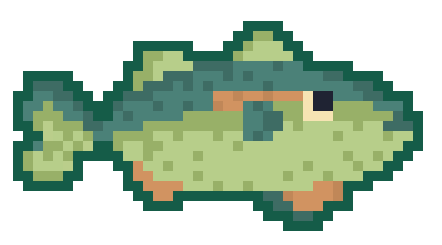
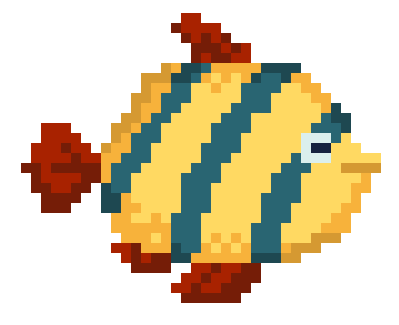
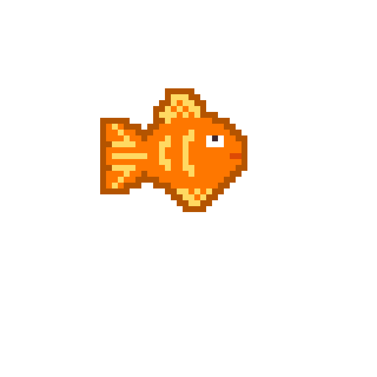
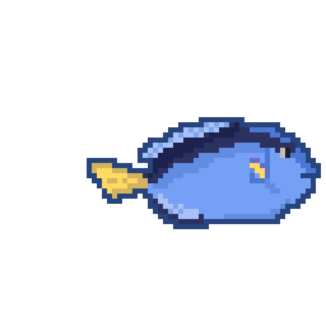
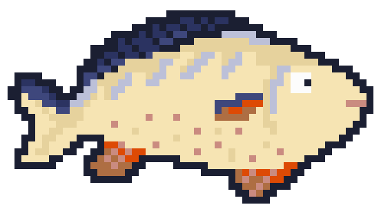
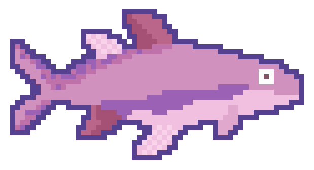
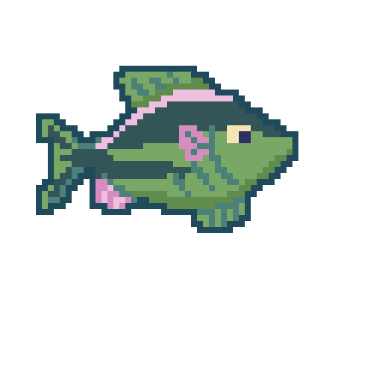
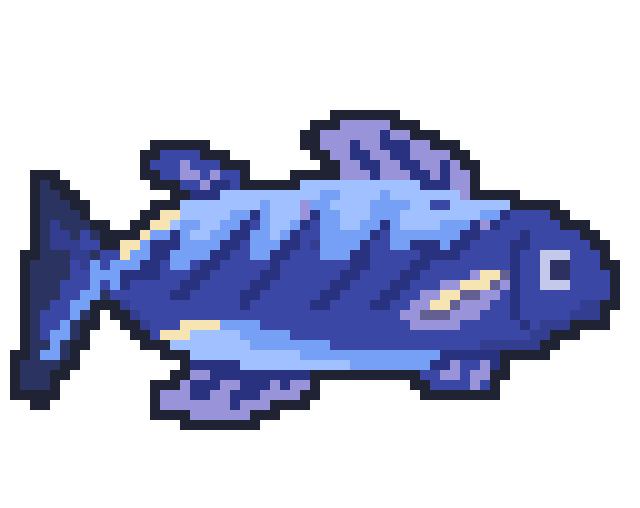
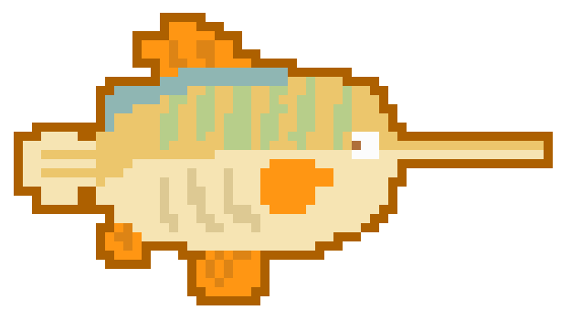

Fish in Purradise Island
Explore a collection of unique pixel-art fish! What you can fish and collect in the FISHTOPIA. From cute and colorful swimmers to rare legendary species. Meet the different level of fish to trade and run grandfather's fishing operation in the Purradise Island!
Small Fish
1.Fish Name

A small freshwater-style fish with a soft green body and dotted texture. It is one of the easiest fish to catch, making it perfect for beginner players. Difficulty Level: Easy
2.Fish Name

A bright tropical fish with yellow scales, blue stripes, and red fins. It moves quickly but stays near floating plants areas.
- Difficulty Level: Easy
3.Fish Name

A vibrant orange fish with a playful and energetic appearance. It is common in sunny, open water zones.Frequently appears during daytime and can be caught with starter equipment.
- Difficulty Level: Easy
4.Fish Name

A sleek blue fish with a yellow tail, known for its smooth swimming movement. Hard to catch somtimes because of the color align with the water. Requires slightly better timing.
- Difficulty Level: Medium
Medium Fish
1.Fish Name

A balanced medium fish with cream and blue tones. It is more cautious and takes longer to bite. Cautious and observant, it circles bait before deciding to bite.
- Difficulty Level: Medium
2.Fish Name

A shark-inspired fish with a stronger and more intimidating design. It is fast and harder to reel in. Like to swims alone can be aggressive and may chase smaller fish away.
- Difficulty Level: Hard
3.Fish Name

An exotic and rare-looking fish with unique colors. Shy and unpredictable it hides near plants or rocks and swims away quickly when disturbed
- Difficulty Level: Medium
Large Fish
1.Fish Name

A heavy and powerful fish with a strong presence. Slow-moving but stubborn once it bit the bait and hard to find because it swims in the deep zone
- Difficulty Level: Hard
2.Fish Name

A quirky and rare fish with a unique shape. Swimming very fast and like to keep distance from other fish. Its unusual body shape and calm movement make it a rare and memorable species.
- Difficulty Level: Very Hard